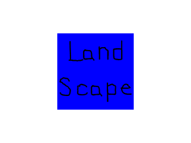

Extensions and Changing Orientation

Last Updated 8/20/17
So you learned how to set up the SDL2 library and you want to add SDL extension libraries. Fortunately, SDL_image/SDL_ttf/SDL_mixer are just another library you have to add on and if you already set up SDL2, you made it through the hard part.After we set up SDL_image, we'll cover handling orientation change on Android/iOS.
| Select Your Mobile/Development Platform | |
| Windows Android Studio 2.3.3 | |
| Linux Android | |
| Mac Android | |
| iOS | |